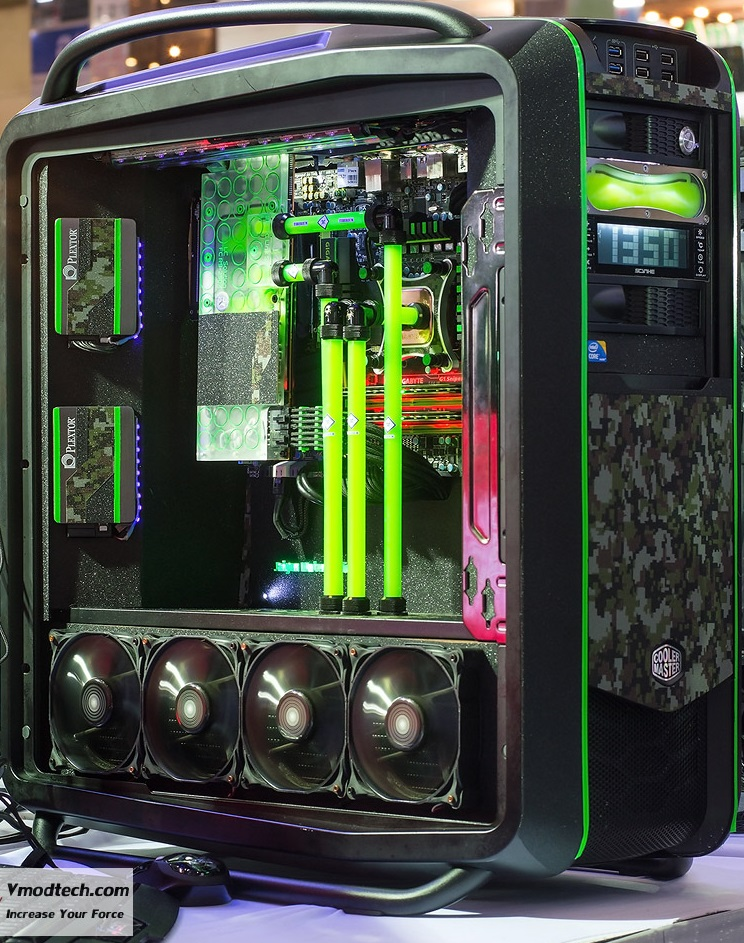
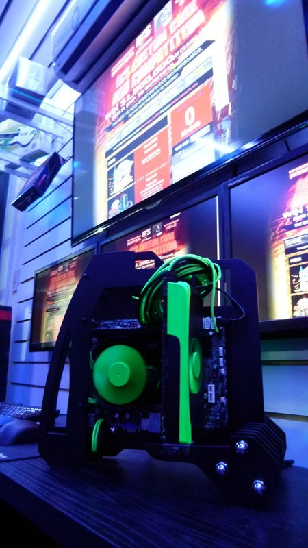
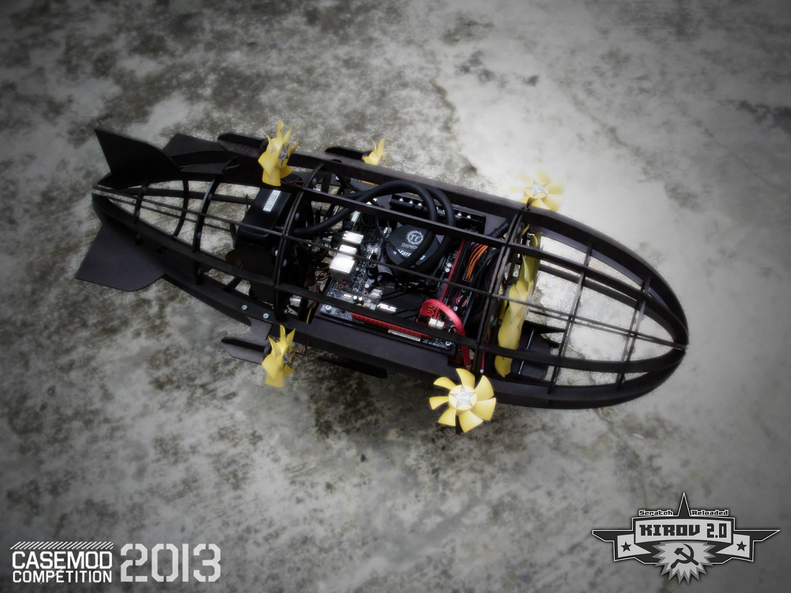
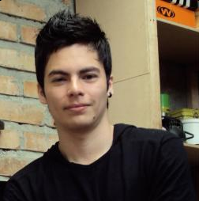
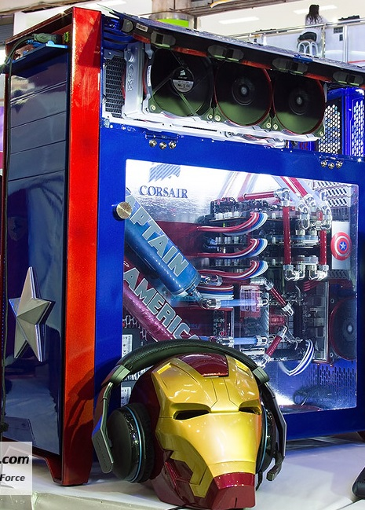

Modding: El arte y técnica de modificar estéticamente la computadora...

La palabra modding se suele usar frecuentemente para las modificaciones realizadas a un ordenador o a algo relacionado con el,como son los perifericos y accesorios.
Es un método que consiste en personalizar los PC's añadiendole luces, modificando la estructura de la caja, anadiendo componentes, modificando la forma de estos para obtener mayor espectacularidad y diseño, en definitiva es el Arte de darle forma y color a tu PC,poniendo en prueba la imaginación de cada quien.
Se pueden modificar todas las partes de un Pc, a exepcion de los componentes electronicos que forman parte de su arquitectura,esto con el fin de conseguir un diseño.A todo el que practica o hace el modding se le llama “modder”.
Cabe destacar este gran Modding, que tiene un aspecto por decirlo así militar, donde se ve relfejado el gran diseño dinámico que se le aplico a este chasis Cosmos de la compañia Cooler Master. Cabe mencionar que los tubos por donde pasa el liquido refrigerante hacía el procesador son increíbles, debido a que son rectos y no se doblan.
Este Mod, fue realizado en un evento de los EE.UU, llamado vModTech, que reune a los mejores concursantes en está área.
¿Cuales son los tipos de Moddings existentes, y como se clasifican?
Existen tres tipos de Mods
Stock Modding - Object Modding - Sractch Modding.
Stock Modding
Este usualmente es el punto de partida de la mayoría de los modders. Toman un gabinete común y empiezan a cortarle una ventana, luego le agregan luces, ventiladores con LEDs y si acaso algún mod de tipo eléctrico. Éstos componen la gran mayoría de la comunidad de modders en el mundo. Pero, como se está volviendo casi algo común y corriente, la atracción de hacer un modding de gabinetes de fábrica va perdiendo el atractivo porque empiezan verse muy parecidos.
Como se dijo anteriormente, es un Mod sencillo, simplemente que denota una ventana divisando los componentes del PC, junto a los leds, introducidos en este.
Object Modding
En este tipo de mods básicamente es meter los componentes de una computadora dentro de casi cualquier tipo de envase imaginable, del cual, se han utilizado basureros, tostadoras, cajas de herramientas, etc. Pero no significa que por el hecho de que se pudieron adaptar los componentes de una computadora dentro de algún envase raro, sea un mod de calidad. El mejor Mod de Objetos se logra con una combinación inteligente del posicionamiento de los componentes, combinando un gran detalle y un estilo estético. Este es el segundo grupo más grande de modders y algunos de los mods más creativos se han hecho en esta sección.
Este Mod, es la representación de una carro Lamborghini, donde se denota un gran trabajo artistico, ya que dentro del auto está la Mother Board, Discos Duros, y lo que sobre sale en la parte de atras del auto, es la tarjeta de video, que por cierto es una ASUS.
Scratch Modding
Este género, que es empezar desde cero, es la verdadera cima del Modding. Requiere de un altísimo grado de habilidad, conocimiento y técnica. Los ScratchModders representan la élite del Modding y por consiguiente, son la parte más detallada de la comunidad de Modding en el mundo. Aquí radican los conceptos genuinamente originales de los cuales casi siempre se inicia de un ante-proyecto. Usualmente, partiendo de bosquejos, dibujos y diseños 3D utilizando programas como Sketchup; definiendo la factibilidad del uso y colocación de los componentes antes de comenzar a fabricar cualquier cosa.
Claramente, este Mod pegado en la pared, tuvo que tener un análisis detallado sobre la construcción de este, es decir, la realización de unos planos bien maquetados
¿Qué componentes puedo moddear y qué herramientas necesito?
No existe una regla ni punto de partida para comenzar a modificar un componente de una computadora. Se puede modificar cualquier componente que se tenga en mente, pero generalmente son los gabinetes los que reciben mayor atención. Un modding, dependiendo de nuestras habilidades, puede comenzar desde colocar ventiladores estratégicamente en nuestro gabinete y un acomodo adecuado de los cables; extendiéndonos con una ventana, pintura y luces hasta llegar a modificar por completo nuestro componente en tamaño y forma.
En cuanto a las herramientas que necesitamos y las que son más utilizadas por los modders tenemos, por mencionar algunas:
Taladro y brocas
Limas y lijas
Caladora (o sierra para corte)
Cautín, pinzas pelacables y soldadura
Flexómetro, escuadra y regla
Remachadora, cinta adhesiva, pinzas y otras herramientas

Ya tengo un componente para modificar, ¿qué sigue ahora?
Una vez que se ha seleccionado un componente para modificarlo y darle nuestro estilo personal, es necesario tener varios puntos en mente:
Tener una idea
Escoger los materiales a utilizar
Un espacio adecuado para trabajar
Las herramientas adecuadas
Siempre es recomendable comenzar con una idea, realizar un bosquejo a papel y lápiz, darle forma con ayuda de cualquier programa de diseño en 3D (Sketchup, AutoCAD, Solid Works, etc.) y finalmente, una vez que estamos satisfechos con nuestro diseño y seguros de que no habrá ningún problema, se comienza a trabajar directamente en el componente a modificar.
Si nuestro mod será del tipo objetc ó scratch, dependerá de nuestro grado de habilidad y destreza que necesitaremos implementar para que nuestro trabajo quede impecable y sin ningún error.
Los materiales a utilizar juegan un rol muy importante en nuestro trabajo, pues si no son los correctos, simplemente nuestro trabajo final no será el que teníamos en mente cuando comenzamos a diseñar nuestro mod. Algunos de los materiales más usados para comenzar un mod, por ejemplo:
Acrílico en distintas presentaciones
Tornillos y remaches
Lámina nueva o de otros gabinetes
Piezas para reutilizar de otros gabinetes
Pintura
El espacio en el que trabajemos es muy importante, pues aquí radica el hecho de que estemos a gusto y que simplemente, no seamos molestados mientras trabajamos. Por lo general, dependiendo la dificultad de nuestro mod y de nuestra habilidad, se llevan algunas semanas de trabajo. Es por esto que es importante tener un espacio óptimo para llevar a cabo nuestro trabajo. Contar con una mesa de trabajo amplia, así como una excelente iluminación y ventilación, es lo más adecuado para trabajar.
Finalmente, las herramientas son las que nos darán un trabajo de calidad. La falta de éstas, son las que provocarán que nuestro trabajo no tenga una calidad o estética deseada. Pero, no por esto, significa que nos será imposible realizar nuestro mod. Siempre hay herramientas que sustituyen el trabajo de otras, por ejemplo, si no contamos con plasma para recortar nuestros diseños en la tapa de un gabinete, es cuando utilizamos el Dremel, de lo contrario, podemos utilizar un arco con segueta y así recortar nuestro diseño… Las herramientas, son una gran ventaja a nuestro favor cuando necesitamos hacer un modding. Pero, la falta de éstas no deberían hacer un obstáculo para que no podamos comenzar o avanzar con nuestros proyectos.
Para que así, nuestra "estación de control" PC, quede excelente y de una manera brillante. Es broma. Pero lo que sí podemos concluir es que El Modding, es una excelente manera de darle vida a nuestro viejo, gris y apagado PC, donde mediante ciertos materiales se pueden lograr combinaciones infinitas de arte. Para que así, en el reciento en que se encuentre se vea de una manera agradable.
Observa los tres mejores Modders, escojidos por su gran talento artistico y sus grandes modificaciones. Son considerados los mejores de su país.
Grandes Exponentes Modders a Nivel Mundial
Nahuel Rodríguez.
El Gafas, como comunmente le llaman, vive en la republica de la Argentina, realiza Modding y algo de OverClock.
Sus obras son explendidas donde mediante su conocimiento y desarollo del arte, genera unas increíbles obras artisticas aplicado la computadora.
Este Modder, ha participado en diferentes competiciones a nivel local e internacional, de hecho incluso ha participado en ECS MOD 2012 en Argentina.
He aquí, una de sus mejores obras, donde esta, está construida en materiales de aluminio, y le ha realizado modificaciones de color a las partes del Hardware. Este proyecto se llamo Disruptive.
Sí quieres apreciar como este artista, llevo a cabo este gran Modding, visita.
Siguelo en Twitter como, @elGafasmodMartín Muñoz.
Modder conocido en Colombia por sus creativos trabajos y conferencias en Campus Party Colombia al igual por participaciòn en pasados eventos de modding a nivel mundial.
Mejor conocido como MooZ en el mundo tecnológico, es ingeniero en automática industrial de la Universidad del Cauca y gran apasionado por las artes. Esa combinación le ha permitido desarrollarse favorablemente en el modding en los últimos años. Varios de sus trabajos han sido objeto de exposición en eventos reconocidos como CeBit 2012 (Angry Birds).
He aquí, una de sus mejores obras llamada Sracth Build, en donde está tiene forma de un Globo Aerodinámico.
Sí quieres ver más obras del MooZ, visita.
Siguelo en Twitter como, @MooZ91 Jengki-Wmp.
Artista nacido en Tailandia, es considerado como uno de los mejores exponentes de su país, donde sus increíbles trabajos asombran y dejan perplejo a la vista, ya que posee una técnica inigualable, sobre la modificación de las PCs.
No se tiene mucha información sobre como comenzó en este campo, pero lo que sí se sabe es que realiza Moddings de cualquier tipo. Principalmente realiza Moddings sobre super heores como Hulk - El capitan América - Iron Man - Spiderman, entre otros. De hecho también ha realizado Moddings sobre Ferrari. Ferrari.
He aquí, una de sus mejores obras sobre el Capitan América y la particularidad de que tiene el casco de Iron Man como sujetador de Audifonos Gamer.
Sí quieres ver más obras de Jengki-Wmp, visita.
Siguelo en Twitter como, @Jengki-WmpCooling | Modding | Empresas
Diseñadores Web: Sebastián Tutistar Valencia - Vivian Vanessa Ijaji - Marcela Niño Mejia.
Copyright © 2015. All Rights Reserved